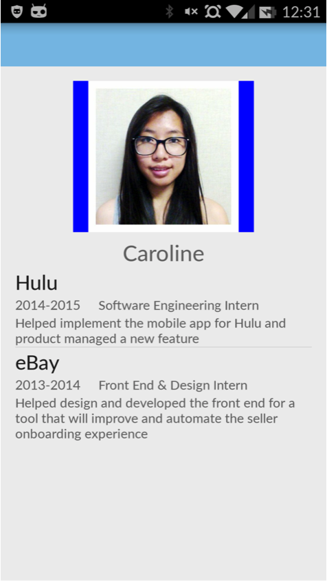
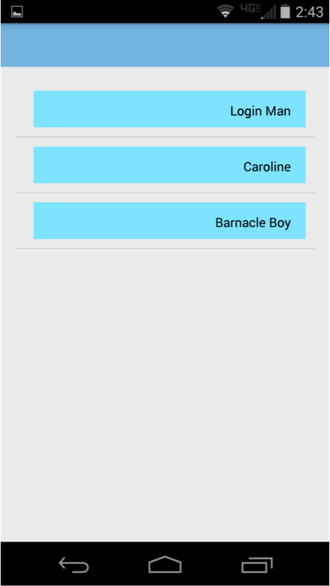
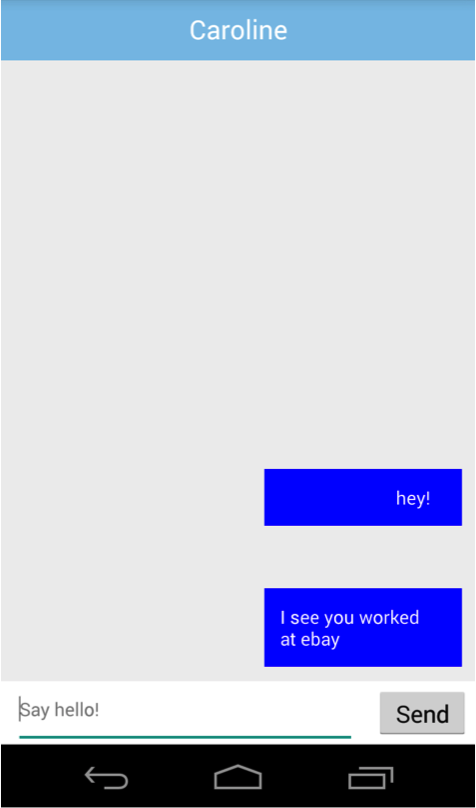

An interactive Android soundboard created for professional YouTuber, Bryan Simon of Machinima.com.
The focus was an elegant design, both in aesthetics and code. The mobile audio app features custom auto-resizing button and background .9 files, play/pause functionality, a splash screen, and proper scaling with all screen sizes and resolutions.
Code draws from an array of sound and text files, automatically rendering and formatting buttons of the appropriate size based on calculations utilizing system data. This ensures future additions or removals of sound bites to be a trivial process, as all formatting is automated rather than hard coded.
[github]
Swipes for Advice
Tinder for networking. As underclassmen we're always wasting extra dining hall swipes and need valuable mentorship and career advice, and our older upperclassmen friends miss UCLA's wonderful buffet style dining.
With Swipes for Advice, it's a win-win!
Browse, match, and chat with local profiles showing credentials pulled from LinkedIn. If you two hit it off, take an upperclassmen out for a meal and receive mentorship over lunch!
[github]
[ppt presentation]
Additional Screenshots:



A basic web crawler and search engine written in C++.
Utilizing the Microsoft Windows Internet API (wininet), I designed a program which indexes websites by parsing its plain-text and creating a searchable word map. Users can then search indexed webpages via keywords/phrases and receive match statistics.
[github]
It's a Wonderful Day
Sometimes we just need a little peace and quiet.
It's a Wonderful Day is an short film created with openGL depicting the fate of a happy family of snowmen and one particularly grumpy sun.
It placed top 3 for best animation project in UCLA's Computer Graphics class of Spring 2014.
[youtube]
The aliens are fierce and the torpedoes are scarce.
Enter Space Inflators. A classic top-down shooter written in C++, inspired by the arcade classic, Space Invaders. Utilizing an existing graphics and sound API, I created my own take on xenocide in two dimensions.
Space Inflators features 3 different types of aliens, all with unique AI states and behaviors, damage statistics, hit points, and power up drop rates.
[playable demo] (2MB .zip)
[github]